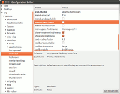

Tipps
Archivierte Anleitung
Dieser Artikel wurde archiviert, da er - oder Teile daraus - nur noch unter einer älteren Ubuntu-Version nutzbar ist. Diese Anleitung wird vom Wiki-Team weder auf Richtigkeit überprüft noch anderweitig gepflegt. Zusätzlich wurde der Artikel für weitere Änderungen gesperrt.
Zum Verständnis dieses Artikels sind folgende Seiten hilfreich:
- Start von Anwendungen im Vollbildmodus unt...
- Alle Startprogramme anzeigen
- Standard-Anwendungen ändern
- Verknüpfungen auf dem Desktop
- Alte Laufleisten (Scrollleisten) nutzen
- GNOME 3 Classic Mode
- Herunterfahren per Tastenkombination
- Launcher fixieren (Unity-2D)
- Aero Snap in Unity-2D
- Icons in Menüs
- Standard-Einstellungen CCSM
- Unity konfigurieren
- Wie heißen die Unity-Elemente
- Zuletzt verwendete Dateien löschen
- Dash-Icon im Launcher ändern
- Problemlösungen
- Ungelöste Probleme
- Links
 Dieser Artikel gehört zur Artikelserie über Unity, der neuen Desktop-Oberfläche ab Ubuntu 11.04. Er enthält kurze Abschnitte mit Tipps und Tricks zu verschiedensten Aspekten rund um Unity.
Dieser Artikel gehört zur Artikelserie über Unity, der neuen Desktop-Oberfläche ab Ubuntu 11.04. Er enthält kurze Abschnitte mit Tipps und Tricks zu verschiedensten Aspekten rund um Unity.
Er soll als Erweiterung der anderen Artikel dienen, aber auch – als eine Art FAQ – häufig vorkommende Fragen aus dem Unity-Forum von ubuntuusers.de beantworten.
Hinweis:
Unity-3D-Desktop verlangt auf dem Rechner ein funktionierendes Compiz (ausreichende 3D-Beschleunigung). Wenn keine 3D-Beschleunigung vorhanden ist, funktioniert nur Ubuntu Classic (nur Ubuntu 11.04) bzw. Unity 2D.
Achtung!
In diesem Artikel werden Links zu Fremdquellen und Fremdpaketen gesetzt. Diese können das System gefährden. Die Benutzung fremder Quellen für Software sollte nach Möglichkeit auf das Notwendigste beschränkt werden, da sie einige gravierende Nachteile mit sich bringen.
Start von Anwendungen im Vollbildmodus unterbinden¶
Standardmäßig starten "platzhungrige" Anwendungen wie Evolution oder Firefox im Vollbildmodus, was zwar für Netbooks etc. sinnvoll sein mag, auf großformatigen Bildschirmen aber stören kann. Um das Verhalten zu verändern, kann im Compiz CCSM unter "Arbeitsfläche -> Ubuntu Unity Plugin -> Experimental" der Schieberegler "Automaximize" auf 100 gestellt werden. Damit bleiben die festgelegten Fenstergrößeneinstellungen der Programme später unverändert.
Alle Startprogramme anzeigen¶
Um sich über den „Systembutton“ ("Ausschaltknopf" -> "Startprogramme") alle Startprogramme anzeigen zu lassen (auch die normal nicht sichtbaren), kann man folgenden Befehl im Terminal [1] nutzen:
cd /etc/xdg/autostart/ && sudo sed --in-place 's/NoDisplay=true/NoDisplay=false/g' *.desktop
Danach sieht man via "Ausschaltknopf" -> "Startprogramme" alle dort gelisteten und normalerweise versteckten Startups. Diese kann man dann „enthaken“ und nach einem Neustart sollten selbige auch nicht mehr gestartet werden.
Über den Befehl
cd /etc/xdg/autostart/ && sudo sed --in-place 's/NoDisplay=false/NoDisplay=true/g' *.desktop
kann man den oben durchgeführten Vorgang wieder rückgängig machen und die Anzeigen wieder verstecken.
Standard-Anwendungen ändern¶
Man kann die Standard-Anwendungen von Ubuntu wie folgt ändern: "Ausschaltknopf" -> "Systemeinstellungen" -> "Systeminformation" -> "Vorgabe-Programme" . Dort kann man dann die gewünschten Programme eintragen.
Erweiterte Einstellungen¶
Wem die Unity-eigenen Einstellungen nicht ausreichen, kann die systemweiten Voreinstellungen ergänzen. Diese Informationen stehen in der folgenden Datei:
~/.local/share/applications/mimeapps.list
Diese lässt sich bei Bedarf bearbeiten [4] .
Die Standardanwendungen stehen unter den Parameter Default Applications:
[Default Applications] text/html=chromium-browser.desktop
Eigene Ergänzungen stehen unter den Parameter Added Associations:
[Added Associations] image/png=gpicview.desktop;eog.desktop;firefox.desktop;geeqie-gps.desktop;mtpaint.desktop;
Eine vollständige Übersicht aller Applikationen findet man in der Datei /usr/share/applications/defaults.list, die man sich wie folgt anzeigen lassen kann:
cat /usr/share/applications/defaults.list
Hat man die Änderungen vorgenommen, sollten die jeweiligen Anwendungen mit dem gewünschten Programm geöffnet werden. Zusätzlich taucht das eingestellte Programm auch in dem Eigenschaften -> Öffnen mit Dialog auf.
Weiterführende Informationen:

Standard-Anwendungen zurücksetzen¶
Zum Teil kommt es vor, dass Unity mit den Standard-Anwendungen durcheinanderkommt (siehe Klick auf USB Stick-Icon startet Banshee). Die Liste der Standard-Anwendungen kann man zurücksetzen, indem man die Datei .local/share/applications/mimeapps.list im Homeverzeichnis löscht (Backup anlegen!). Unity sollte nun wieder die richtigen Programme öffnen. Eine neue mimeapps.list wird vom System automatisch angelegt, sobald man neue Standard-Anwendungen festlegt.
Verknüpfungen auf dem Desktop¶
Um Verknüpfungen auf dem Desktop anzulegen, muss man einen kleinen Umweg gehen, da es im Konzept „Unity“ schlicht nicht vorgesehen ist. Man kopiert die .desktop-Dateien (also die Programmstarter) aus dem Verzeichnis /usr/share/applications in das Verzeichnis ~/Arbeitsfläche (bzw. ~/Desktop). Manuell angepasste Starter findet man stattdessen unter ~/.local/share/applications, nachdem man versteckte Dateien sichtbar gemacht hat [4]. Diese Programmstarter muss man danach noch ausführbar machen [5]. Auch Dokumente und dergleichen kann man unter ~/Arbeitsfläche speichern, diese sind dann ebenfalls auf dem Desktop zu sehen.
Weiterhin gibt es vier vordefinierte Programmstarter (Eigene Dateien, Arbeitsplatz, Papierkorb, Netzwerkumgebung). Damit diese auch angezeigt werden, hilft die im Artikel Desktop-Symbole beschriebene Vorgehensweise weiter.
Alte Laufleisten (Scrollleisten) nutzen¶
Um die alten (aus GNOME 2 bekannten) Laufleisten wieder herzustellen, verwendet man die folgenden Kommandos in einem Terminal [1] :
Entweder
sudo apt-get remove overlay-scrollbar
oder
echo "export LIBOVERLAY_SCROLLBAR=0" | sudo tee -a /etc/X11/Xsession.d/80-disableoverlayscrollbars
GNOME 3 Classic Mode¶
Anwender, die Unity nicht verwenden möchten, können GNOME Classic (No Effects) auswählen, das der Fallback-Session von GNOME 3 entspricht. Dazu muss man lediglich folgenden Befehl im Terminal [1] ausführen:
sudo apt-get install gnome-shell gdm
Nach einem Neustart oder dem Abmelden aus der aktuellen Sitzung kann man im GDM als Session GNOME Classic (No Effects) auswählen.
Herunterfahren per Tastenkombination¶
Manche Anwender stören sich daran, dass sie Ubuntu mit drei Tastenklicks herunterfahren müssen (siehe Tastenkürzel zum Herunterfahren). Mit dem folgenden Verfahren kann man das System per Tastendruck herunterfahren.
Man öffnet ein Terminal [1] und gibt dort die folgenden beiden Befehle ein:
gconftool-2 -t str --set /apps/metacity/global_keybindings/run_command_1 "<Control><Alt>Delete" gconftool-2 -t str --set /apps/metacity/keybinding_commands/command_1 "gnome-session-quit --power-off"
Statt der 1 kann man eine Zahl von 1 bis 12 wählen. Dabei sollte man darauf achten, dass man nicht aus Versehen eine andere Tastenkombination überschreibt. Dazu nutzt man am besten den unten beschrieben Weg über die grafische Benutzeroberfläche.
Per GUI aktivieren¶
 Um die GUI zum Ändern der Anzeige zu nutzen, nutzt man den gconf-editor. Man startet den Editor über die Tastenkombination
Alt +
F2 und durch die Eingabe von
Um die GUI zum Ändern der Anzeige zu nutzen, nutzt man den gconf-editor. Man startet den Editor über die Tastenkombination
Alt +
F2 und durch die Eingabe von gconf-editor. Weitere Informationen enthält der Artikel Unity/Unity Einstellungen.
Im Editor selbst navigiert man in der linken Spalte zu "apps" --> "metacity" -> "global_keybindings" und gibt dann in der rechten Spalte in einer der Zeilen namens run_command_1 bis run_command_12 den Wert (Value) <Control><Alt>Delete ein.
Man navigiert anschließend in der linken Spalte zu keybinding_commands, sucht rechts im Feld die entsprechende Spalte command_1 bis command_12 und gibt dort dann gnome-session-quit --power-off ein. Anschließend muss man sich aus- und wieder einloggen, um die Änderungen wirksam werden zu lassen.
Launcher fixieren (Unity-2D)¶
Um den Launcher in Unity-2D zu fixieren, kann man ein Terminal öffnen [1] und, das Tool dconf-tools installieren (dieses enthält den dconf-editor):
sudo apt-get install dconf-tools
Nun kann man im Terminal die folgenden Befehle eingeben:
dconf write /com/canonical/unity-2d/launcher/hide-mode 0 dconf write /com/canonical/unity-2d/launcher/use-strut true
Nach einem Neustart ist der Launcher in Unity-2D fixiert. Siehe auch weitere Informationen im Abschnitt Links.
Per GUI fixieren¶
 Um den Launcher in Unity-2D zu fixieren, installiert man sich zuerst das Paket dconf-tools, das den dconf-editor enthält.
dconf-tools (universe)
 mit apturl
mit apturl
Paketliste zum Kopieren:
sudo apt-get install dconf-tools
sudo aptitude install dconf-tools
Anschließend startet man über die Dash oder das Terminal dconf-editor:
dconf-editor
und navigiert zu "com" -> "canonical" -> "unity-2d" -> "launcher". In der rechten Spalte erstellt man daraufhin den Eintrag hide-mode mit dem Wert (Value) 0, sowie eine weitere Spalte mit dem Eintrag use-strut und dem Wert true, und setzt einen Haken davor. Anschließend kann man den dconf-editor wieder schließen.
Aero Snap in Unity-2D¶
Wie man die Funktion Aero Snap – das Maximieren eines Fenster bei Annäherung an eine Bildschirmseite – auch in Unity-2D einsetzen kann, zeigt dieser Eintrag auf AskUbuntu: How do I get Aero Snap in Unity 2D?
Icons in Menüs¶
Ab GNOME 2.28 wurde auf Icons in Menüs verzichtet (siehe GNOME 2.28: Verzicht auf Symbole – mehr Texteinträge). Wer auch in Unity diese angezeigt haben möchte, z. B. in LibreOffice kann die folgenden Wege nutzen:
Via dconf-editor¶
Dazu installiert man sich zuerst das Paket dconf-tools, das den dconf-editor enthält.
dconf-tools (universe)
mit apturl
Paketliste zum Kopieren:
sudo apt-get install dconf-tools
sudo aptitude install dconf-tools
Anschließend startet man über die Dash oder das Terminal dconf-editor:
dconf-editor
und navigiert zu "org" -> "gnome" -> "desktop" -> "interface". Man sucht in der rechten Spalte den Eintrag menus-have-icons und setzt einen Haken davor. Anschließend kann man den dconf-editor wieder schließen.
Via GNOME Tweak Tool¶
Da das GNOME Tweak Tool nicht offiziell unterstützt wird, soll an dieser Stelle nur ein Link gesetzt werden: http://forum.ubuntuusers.de/post/3469742/
Standard-Einstellungen CCSM¶
Eine Übersicht, wie der CompizConfig Einstellungs-Manager (CCSM) unverändert eingestellt ist, findet man auf diesen beiden Screenshots:
Diese können beispielsweise helfen, wenn man (versehentlich) den Würfel (siehe Bild) aktiviert hat.
Unity konfigurieren¶
Sowohl für Natty als auch für Oneiric gibt es Möglichkeiten, Unity zu konfigurieren:
Wie heißen die Unity-Elemente¶
Folgende Seiten geben Überblick über die einzelnen Elemente in Unity:
What's the right terminology for Unity's UI elements in Natty?
What's the right terminology for Unity's UI elements in Oneiric?
Zuletzt verwendete Dateien löschen¶
Die Informationen zu den zuletzt verwendeten Dateien stammen von Zeitgeist. Um die Liste der zuletzt verwendeten Dateien zu löschen, muss man daher den Journal von Zeitgeist löschen.
Dash-Icon im Launcher ändern¶
Wie man das Dash-Icon im Launcher ändern kann, steht auf AskUbuntu: How to change the Dash icon in the Unity Launcher?.
Problemlösungen¶
Nachfolgend finden sich einige Lösungen zu Problemen, die mit Unity, Compiz oder CCSM auftreten können.
Launcher und Panel fehlen¶
Wenn sowohl Launcher als auch Panel fehlen, kann es helfen, wenn man Compiz zurücksetzt. Dazu nutzt man diesen beschriebenen Weg.
Dash-Suche zeigt keine Ergebnisse¶
Man schaut im Terminal [1] nach, ob diese beiden Pakete installiert sind bzw. installiert sie erneut:
apt-get install --reinstall unity-lens-applications unity-lens-files
Danach aus-/einloggen oder noch besser neustarten. Dann werden wieder Suchergebnisse angezeigt.
Ab Ubuntu 12.04 kann es auch weiterhelfen, den Ordner ~/.local/share/zeitgeist/ komplett zu löschen (siehe Zeitgeist)
Ungelöste Probleme¶
Bei Unity gibt es noch einige weitere ungelöste Probleme. Die Liste soll die wichtigsten und schwerwiegendsten wiedergeben:
File search should use Tracker when available
Siehe dazu auch die Diskussion Die Suchfunktion der Dash findet keine Dateien bzw. Dokumente, die noch nicht geöffnet wurden sowie How does Unity's dash index and search work?)
Links¶
 - Hauptseite
- Hauptseiteextern¶
Beispiele zur Nutzung des CCSM:
Standardprogramme ändern:
Herunterfahren per Tastenkombination:
Launcher in Unity-2D fixieren:
How do I set the launcher to always show in Unity 2d? (siehe Incorrect size when launcher uses struts in Zusammenhang mit der Option
use_strut)
Zuletzt verwendete Dateien löschen:
Compiz-Würfel zurücksetzen:

- Erstellt mit Inyoka
-
 2004 – 2017 ubuntuusers.de • Einige Rechte vorbehalten
2004 – 2017 ubuntuusers.de • Einige Rechte vorbehalten
Lizenz • Kontakt • Datenschutz • Impressum • Serverstatus -
Serverhousing gespendet von